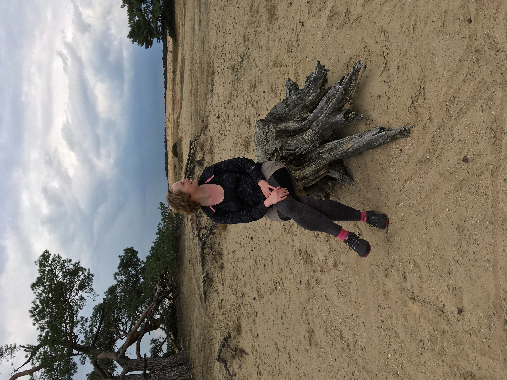

Hello! my name is Sarah Evarts and I am super excited to be studying at Leiden University.
I was born and raised in Burlington Vermont.
I did my undergraduate degree in English Literature and Language at Queen's University in Kingston Ontario. It was there that I developed my love of books, not only for their contents, but also for the medium itself!
After finishing my BA, I worked for a while in publishing servies before deciding I wanted to see a bit more of the world. Therefore I moved to Budapest, Hungary where I worked as an English teacher for several years. I worked at many different schools, but primarily at Converzum Language School.
I speak the following languages:
Hobbies:
| Prior Knowledge | Expectations |
| None, except general concepts of XML | To conquer my fear of digital technologies |